The BLAS Interface¶
The cvxopt.blas module provides an interface to the double-precision real and complex Basic Linear Algebra Subprograms (BLAS). The names and calling sequences of the Python functions in the interface closely match the corresponding Fortran BLAS routines (described in the references below) and their functionality is exactly the same. Many of the operations performed by the BLAS routines can be implemented in a more straightforward way by using the matrix arithmetic of the section Arithmetic Operations, combined with the slicing and indexing of the section Indexing and Slicing. As an example, C = A * B gives the same result as the BLAS call gemm(A, B, C). The BLAS interface offers two advantages. First, some of the functions it includes are not easily implemented using the basic matrix arithmetic. For example, BLAS includes functions that efficiently exploit symmetry or triangular matrix structure. Second, there is a performance difference that can be significant for large matrices. Although our implementation of the basic matrix arithmetic makes internal calls to BLAS, it also often requires creating temporary matrices to store intermediate results. The BLAS functions on the other hand always operate directly on their matrix arguments and never require any copying to temporary matrices. Thus they can be viewed as generalizations of the in-place matrix addition and scalar multiplication of the section Arithmetic Operations to more complicated operations.
See also
- C. L. Lawson, R. J. Hanson, D. R. Kincaid, F. T. Krogh, Basic Linear Algebra Subprograms for Fortran Use, ACM Transactions on Mathematical Software, 5(3), 309-323, 1975.
- J. J. Dongarra, J. Du Croz, S. Hammarling, R. J. Hanson, An Extended Set of Fortran Basic Linear Algebra Subprograms, ACM Transactions on Mathematical Software, 14(1), 1-17, 1988.
- J. J. Dongarra, J. Du Croz, S. Hammarling, I. Duff, A Set of Level 3 Basic Linear Algebra Subprograms, ACM Transactions on Mathematical Software, 16(1), 1-17, 1990.
Matrix Classes¶
The BLAS exploit several types of matrix structure: symmetric, Hermitian, triangular, and banded. We represent all these matrix classes by dense real or complex matrix objects, with additional arguments that specify the structure.
- Vector
- A real or complex
 -vector is represented by a matrix
of type 'd' or 'z' and length , with the
entries of the vector stored in column-major order.
-vector is represented by a matrix
of type 'd' or 'z' and length , with the
entries of the vector stored in column-major order. - General matrix
- A general real or complex
 by matrix is represented
by a real or complex matrix of size (, ).
by matrix is represented
by a real or complex matrix of size (, ). - Symmetric matrix
A real or complex symmetric matrix of order
is represented
by a real or complex matrix of size (, ),
and a character argument uplo with two possible values:
'L' and 'U'. If uplo is 'L', the lower
triangular part of the symmetric matrix is stored; if uplo is
'U', the upper triangular part is stored. A square
matrix X of size (, ) can therefore be
used to represent the symmetric matrices![\left[\begin{array}{ccccc}
X[0,0] & X[1,0] & X[2,0] & \cdots & X[n-1,0] \\
X[1,0] & X[1,1] & X[2,1] & \cdots & X[n-1,1] \\
X[2,0] & X[2,1] & X[2,2] & \cdots & X[n-1,2] \\
\vdots & \vdots & \vdots & \ddots & \vdots \\
X[n-1,0] & X[n-1,1] & X[n-1,2] & \cdots & X[n-1,n-1]
\end{array}\right] \quad \mbox{(uplo = 'L')},
\left[\begin{array}{ccccc}
X[0,0] & X[0,1] & X[0,2] & \cdots & X[0,n-1] \\
X[0,1] & X[1,1] & X[1,2] & \cdots & X[1,n-1] \\
X[0,2] & X[1,2] & X[2,2] & \cdots & X[2,n-1] \\
\vdots & \vdots & \vdots & \ddots & \vdots \\
X[0,n-1] & X[1,n-1] & X[2,n-1] & \cdots & X[n-1,n-1]
\end{array}\right] \quad \mbox{(uplo = U')}.](_images/math/52e0ff1161373cc9cd64457d457939a0cdf63750.png)
- Complex Hermitian matrix
A complex Hermitian matrix of order
is represented by a
matrix of type 'z' and size (, ),
and a character argument uplo with the same meaning as for
symmetric matrices. A complex matrix X of size
(, ) can represent the Hermitian matrices![\left[\begin{array}{ccccc}
\Re X[0,0] & \bar X[1,0] & \bar X[2,0] & \cdots &
\bar X[n-1,0] \\
X[1,0] & \Re X[1,1] & \bar X[2,1] & \cdots &
\bar X[n-1,1] \\
X[2,0] & X[2,1] & \Re X[2,2] & \cdots & \bar X[n-1,2] \\
\vdots & \vdots & \vdots & \ddots & \vdots \\
X[n-1,0] & X[n-1,1] & X[n-1,2] & \cdots & \Re X[n-1,n-1]
\end{array}\right] \quad \mbox{(uplo = 'L')},
\left[\begin{array}{ccccc}
\Re X[0,0] & X[0,1] & X[0,2] & \cdots & X[0,n-1] \\
\bar X[0,1] & \Re X[1,1] & X[1,2] & \cdots & X[1,n-1] \\
\bar X[0,2] & \bar X[1,2] & \Re X[2,2] & \cdots &
X[2,n-1] \\
\vdots & \vdots & \vdots & \ddots & \vdots \\
\bar X[0,n-1] & \bar X[1,n-1] & \bar X[2,n-1] & \cdots &
\Re X[n-1,n-1]
\end{array}\right] \quad \mbox{(uplo = 'U')}.](_images/math/d61de824765ec1e71fab547965361cde159d3af8.png)
- Triangular matrix
A real or complex triangular matrix of order
is represented
by a real or complex matrix of size (, ),
and two character arguments: an argument uplo with possible values
'L' and 'U' to distinguish between lower and upper
triangular matrices, and an argument diag with possible values
'U' and 'N' to distinguish between unit and non-unit
triangular matrices. A square matrix X of size
(, ) can represent the triangular matrices![\left[\begin{array}{ccccc}
X[0,0] & 0 & 0 & \cdots & 0 \\
X[1,0] & X[1,1] & 0 & \cdots & 0 \\
X[2,0] & X[2,1] & X[2,2] & \cdots & 0 \\
\vdots & \vdots & \vdots & \ddots & \vdots \\
X[n-1,0] & X[n-1,1] & X[n-1,2] & \cdots & X[n-1,n-1]
\end{array}\right] \quad \mbox{(uplo = 'L', diag = 'N')},
\left[\begin{array}{ccccc}
1 & 0 & 0 & \cdots & 0 \\
X[1,0] & 1 & 0 & \cdots & 0 \\
X[2,0] & X[2,1] & 1 & \cdots & 0 \\
\vdots & \vdots & \vdots & \ddots & \vdots \\
X[n-1,0] & X[n-1,1] & X[n-1,2] & \cdots & 1
\end{array}\right] \quad \mbox{(uplo = 'L', diag = 'U')},
\left[\begin{array}{ccccc}
X[0,0] & X[0,1] & X[0,2] & \cdots & X[0,n-1] \\
0 & X[1,1] & X[1,2] & \cdots & X[1,n-1] \\
0 & 0 & X[2,2] & \cdots & X[2,n-1] \\
\vdots & \vdots & \vdots & \ddots & \vdots \\
0 & 0 & 0 & \cdots & X[n-1,n-1]
\end{array}\right] \quad \mbox{(uplo = 'U', diag = 'N')},
\left[\begin{array}{ccccc}
1 & X[0,1] & X[0,2] & \cdots & X[0,n-1] \\
0 & 1 & X[1,2] & \cdots & X[1,n-1] \\
0 & 0 & 1 & \cdots & X[2,n-1] \\
\vdots & \vdots & \vdots & \ddots & \vdots \\
0 & 0 & 0 & \cdots & 1
\end{array}\right] \quad \mbox{(uplo = 'U', diag = 'U')}.](_images/math/867c5e4b34778fd3c6fa395079ad365668a137d7.png)
- General band matrix
A general real or complex
by band matrix with
 subdiagonals and 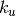 superdiagonals is represented
by a real or complex matrix X of size
(
subdiagonals and 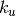 superdiagonals is represented
by a real or complex matrix X of size
( , ), and the two integers and
. The diagonals of the band matrix are stored in the rows
of X, starting at the top diagonal, and shifted horizontally so that
the entries of column
, ), and the two integers and
. The diagonals of the band matrix are stored in the rows
of X, starting at the top diagonal, and shifted horizontally so that
the entries of column  of the band matrix are stored in column
of X. A matrix X of size
(, ) therefore represents the
by band matrix
of the band matrix are stored in column
of X. A matrix X of size
(, ) therefore represents the
by band matrix![\left[ \begin{array}{ccccccc}
X[k_u,0] & X[k_u-1,1] & X[k_u-2,2] & \cdots &
X[0,k_u] & 0 & \cdots \\
X[k_u+1,0] & X[k_u,1] & X[k_u-1,2] & \cdots &
X[1,k_u] & X[0,k_u+1] & \cdots \\
X[k_u+2,0] & X[k_u+1,1] & X[k_u,2] & \cdots &
X[2,k_u] & X[1,k_u+1] & \cdots \\
\vdots & \vdots & \vdots & \ddots &
\vdots & \vdots & \ddots \\
X[k_u+k_l,0] & X[k_u+k_l-1,1] & X[k_u+k_l-2,2] & \cdots &
& & \\
0 & X[k_u+k_l,1] & X[k_u+k_l-1,2] & \cdots &
& & \\
\vdots & \vdots & \vdots & \ddots &
& &
\end{array}\right].](_images/math/7a7c5981a10b05257be74ff3f4854903bfa9052b.png)
- Symmetric band matrix
A real or complex symmetric band matrix of order
with
subdiagonals, is represented by a real or complex matrix X
of size ( , ), and an argument uplo to indicate
whether the subdiagonals (uplo is 'L') or superdiagonals
(uplo is 'U') are stored. The diagonals are
stored as rows of X, starting at the top diagonal (i.e., the main
diagonal if uplo is 'L', or the -th superdiagonal
if uplo is 'U') and shifted horizontally so that the
entries of the -th column of the band matrix are stored in
column of X. A matrix X of size
(, ) can therefore represent the band matrices
, ), and an argument uplo to indicate
whether the subdiagonals (uplo is 'L') or superdiagonals
(uplo is 'U') are stored. The diagonals are
stored as rows of X, starting at the top diagonal (i.e., the main
diagonal if uplo is 'L', or the -th superdiagonal
if uplo is 'U') and shifted horizontally so that the
entries of the -th column of the band matrix are stored in
column of X. A matrix X of size
(, ) can therefore represent the band matrices![\left[ \begin{array}{ccccccc}
X[0,0] & X[1,0] & X[2,0] & \cdots & X[k,0] & 0
& \cdots \\
X[1,0] & X[0,1] & X[1,1] & \cdots & X[k-1,1] & X[k,1]
& \cdots \\
X[2,0] & X[1,1] & X[0,2] & \cdots & X[k-2,2] & X[k-1,2]
& \cdots \\
\vdots & \vdots & \vdots & \ddots & \vdots & \vdots
& \ddots \\
X[k,0] & X[k-1,1] & X[k-2,2] & \cdots & & & \\
0 & X[k,1] & X[k-1,2] & \cdots & & & \\
\vdots & \vdots & \vdots & \ddots & & &
\end{array}\right] \quad \mbox{(uplo = 'L')},
\left[ \begin{array}{ccccccc}
X[k,0] & X[k-1,1] & X[k-2,2] & \cdots & X[0,k] & 0
& \cdots \\
X[k-1,1] & X[k,1] & X[k-1,2] & \cdots & X[1,k] & X[0,k+1]
& \cdots \\
X[k-2,2] & X[k-1,2] & X[k,2] & \cdots & X[2,k] & X[1,k+1]
& \cdots \\
\vdots & \vdots & \vdots & \ddots & \vdots & \vdots
& \ddots \\
X[0,k] & X[1,k] & X[2,k] & \cdots & & & \\
0 & X[0,k+1] & X[1,k+1] & \cdots & & & \\
\vdots & \vdots & \vdots & \ddots & & &
\end{array}\right] \quad \mbox{(uplo='U')}.](_images/math/f316b0ec14c19c1b6879b9d0dda291b1b3eacaf8.png)
- Hermitian band matrix
A complex Hermitian band matrix of order
with
subdiagonals is represented by a complex matrix of size
(, ) and an argument uplo, with the same meaning
as for symmetric band matrices. A matrix X of size
(, ) can represent the band matrices![\left[ \begin{array}{ccccccc}
\Re X[0,0] & \bar X[1,0] & \bar X[2,0] & \cdots &
\bar X[k,0] & 0 & \cdots \\
X[1,0] & \Re X[0,1] & \bar X[1,1] & \cdots &
\bar X[k-1,1] & \bar X[k,1] & \cdots \\
X[2,0] & X[1,1] & \Re X[0,2] & \cdots &
\bar X[k-2,2] & \bar X[k-1,2] & \cdots \\
\vdots & \vdots & \vdots & \ddots & \vdots
& \vdots & \ddots \\
X[k,0] & X[k-1,1] & X[k-2,2] & \cdots & & & \\
0 & X[k,1] & X[k-1,2] & \cdots & & & \\
\vdots & \vdots & \vdots & \ddots & & &
\end{array}\right] \quad \mbox{(uplo = 'L')},
\left[ \begin{array}{ccccccc}
\Re X[k,0] & X[k-1,1] & X[k-2,2] & \cdots & X[0,k] &
0 & \cdots \\
\bar X[k-1,1] & \Re X[k,1] & X[k-1,2] & \cdots &
X[1,k] & X[0,k+1] & \cdots \\
\bar X[k-2,2] & \bar X[k-1,2] & \Re X[k,2] & \cdots &
X[2,k] & X[1,k+1] & \cdots \\
\vdots & \vdots & \vdots & \ddots & \vdots &
\vdots & \ddots \\
\bar X[0,k] & \bar X[1,k] & \bar X[2,k] & \cdots &
& & \\
0 & \bar X[0,k+1] & \bar X[1,k+1] & \cdots & & & \\
\vdots & \vdots & \vdots & \ddots & & &
\end{array}\right] \quad \mbox{(uplo='U')}.](_images/math/c3f5a2b8b364fd6006f57a0b03d27d57344fad31.png)
- Triangular band matrix
A triangular band matrix of order
with subdiagonals
or superdiagonals is represented by a real complex matrix of size
(, ) and two character arguments uplo and
diag, with similar conventions as for symmetric band matrices.
A matrix X of size (, ) can represent
the band matrices![\left[ \begin{array}{cccc}
X[0,0] & 0 & 0 & \cdots \\
X[1,0] & X[0,1] & 0 & \cdots \\
X[2,0] & X[1,1] & X[0,2] & \cdots \\
\vdots & \vdots & \vdots & \ddots \\
X[k,0] & X[k-1,1] & X[k-2,2] & \cdots \\
0 & X[k,1] & X[k-1,1] & \cdots \\
\vdots & \vdots & \vdots & \ddots
\end{array}\right] \quad \mbox{(uplo = 'L', diag = 'N')},
\left[ \begin{array}{cccc}
1 & 0 & 0 & \cdots \\
X[1,0] & 1 & 0 & \cdots \\
X[2,0] & X[1,1] & 1 & \cdots \\
\vdots & \vdots & \vdots & \ddots \\
X[k,0] & X[k-1,1] & X[k-2,2] & \cdots \\
0 & X[k,1] & X[k-1,2] & \cdots \\
\vdots & \vdots & \vdots & \ddots
\end{array}\right] \quad \mbox{(uplo = 'L', diag = 'U')},
\left[ \begin{array}{ccccccc}
X[k,0] & X[k-1,1] & X[k-2,3] & \cdots & X[0,k] &
0 & \cdots\\
0 & X[k,1] & X[k-1,2] & \cdots & X[1,k] &
X[0,k+1] & \cdots \\
0 & 0 & X[k,2] & \cdots & X[2,k] &
X[1,k+1] & \cdots \\
\vdots & \vdots & \vdots & \ddots & \vdots &
\vdots & \ddots
\end{array}\right] \quad \mbox{(uplo = 'U', diag = 'N')},
\left[ \begin{array}{ccccccc}
1 & X[k-1,1] & X[k-2,3] & \cdots & X[0,k] &
0 & \cdots\\
0 & 1 & X[k-1,2] & \cdots & X[1,k] &
X[0,k+1] & \cdots \\
0 & 0 & 1 & \cdots & X[2,k] &
X[1,k+1] & \cdots \\
\vdots & \vdots & \vdots & \ddots & \vdots &
\vdots & \ddots
\end{array}\right] \quad \mbox{(uplo = 'U', diag = 'U')}.](_images/math/1682dfd5865597e4ae2222e7e9de20cb5eadd543.png)
When discussing BLAS functions in the following sections we will omit several less important optional arguments that can be used to select submatrices for in-place operations. The complete specification is documented in the docstrings of the source code, and can be viewed with the pydoc help program.
Level 1 BLAS¶
The level 1 functions implement vector operations.
- cvxopt.blas.scal(alpha, x)¶
Scales a vector by a constant:
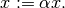
If x is a real matrix, the scalar argument alpha must be a Python integer or float. If x is complex, alpha can be an integer, float, or complex.
- cvxopt.blas.nrm2(x)¶
Euclidean norm of a vector: returns

- cvxopt.blas.asum(x)¶
1-Norm of a vector: returns
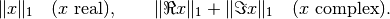
- cvxopt.blas.iamax(x)¶
Returns

If more than one coefficient achieves the maximum, the index of the first
is returned.
- cvxopt.blas.swap(x, y)¶
Interchanges two vectors:
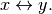
x and y are matrices of the same type ('d' or 'z').
- cvxopt.blas.copy(x, y)¶
Copies a vector to another vector:

x and y are matrices of the same type ('d' or 'z').
- cvxopt.blas.axpy(x, y[, alpha = 1.0])¶
Constant times a vector plus a vector:

x and y are matrices of the same type ('d' or 'z'). If x is real, the scalar argument alpha must be a Python integer or float. If x is complex, alpha can be an integer, float, or complex.
- cvxopt.blas.dot(x, y)¶
Returns
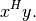
x and y are matrices of the same type ('d' or 'z').
- cvxopt.blas.dotu(x, y)¶
Returns
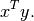
x and y are matrices of the same type ('d' or 'z').
Level 2 BLAS¶
The level 2 functions implement matrix-vector products and rank-1 and rank-2 matrix updates. Different types of matrix structure can be exploited using the conventions of the section Matrix Classes.
- cvxopt.blas.gemv(A, x, y[, trans = 'N', alpha = 1.0, beta = 0.0])¶
Matrix-vector product with a general matrix:

The arguments A, x, and y must have the same type ('d' or 'z'). Complex values of alpha and beta are only allowed if A is complex.
- cvxopt.blas.symv(A, x, y[, uplo = 'L', alpha = 1.0, beta = 0.0])¶
Matrix-vector product with a real symmetric matrix:

where
 is a real symmetric matrix. The arguments A,
x, and y must have type 'd', and alpha and
beta must be real.
is a real symmetric matrix. The arguments A,
x, and y must have type 'd', and alpha and
beta must be real.
- cvxopt.blas.hemv(A, x, y[, uplo = 'L', alpha = 1.0, beta = 0.0])¶
Matrix-vector product with a real symmetric or complex Hermitian matrix:
where
is real symmetric or complex Hermitian. The arguments
A, x, y must have the same type ('d' or
'z'). Complex values of alpha and beta are only
allowed if A is complex.
- cvxopt.blas.trmv(A, x[, uplo = 'L', trans = 'N', diag = 'N'])¶
Matrix-vector product with a triangular matrix:

where
is square and triangular. The arguments A and
x must have the same type ('d' or 'z').
- cvxopt.blas.trsv(A, x[, uplo = 'L', trans = 'N', diag = 'N'])¶
Solution of a nonsingular triangular set of linear equations:
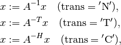
where
is square and triangular with nonzero diagonal elements.
The arguments A and x must have the same type ('d' or
'z').
- cvxopt.blas.gbmv(A, m, kl, x, y[, trans = 'N', alpha = 1.0, beta = 0.0])¶
Matrix-vector product with a general band matrix:
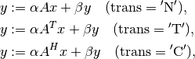
where
is a rectangular band matrix with rows and
subdiagonals. The arguments A, x, y must have
the same type ('d' or 'z'). Complex values of
alpha and beta are only allowed if A is complex.
- cvxopt.blas.sbmv(A, x, y[, uplo = 'L', alpha = 1.0, beta = 0.0])¶
Matrix-vector product with a real symmetric band matrix:

where
is a real symmetric band matrix. The arguments
A, x, y must have type 'd', and alpha and
beta must be real.
- cvxopt.blas.hbmv(A, x, y[, uplo = 'L', alpha = 1.0, beta = 0.0])¶
Matrix-vector product with a real symmetric or complex Hermitian band matrix:
where
is a real symmetric or complex Hermitian band matrix.
The arguments A, x, y must have the same type
('d' or 'z'). Complex values of alpha and
beta are only allowed if A is complex.
- cvxopt.blas.tbmv(A, x[, uplo = 'L', trans = 'N', diag = 'N'])¶
Matrix-vector product with a triangular band matrix:
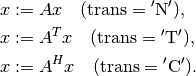
The arguments A and x must have the same type ('d' or 'z').
- cvxopt.blas.tbsv(A, x[, uplo = 'L', trans = 'N', diag = 'N'])¶
Solution of a triangular banded set of linear equations:

where
is a triangular band matrix of with nonzero diagonal
elements. The arguments A and x must have the same type
('d' or 'z').
- cvxopt.blas.ger(x, y, A[, alpha = 1.0])¶
General rank-1 update:
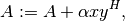
where
is a general matrix. The arguments A, x, and
y must have the same type ('d' or 'z'). Complex
values of alpha are only allowed if A is complex.
- cvxopt.blas.geru(x, y, A[, alpha = 1.0])¶
General rank-1 update:
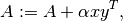
where
is a general matrix. The arguments A, x, and
y must have the same type ('d' or 'z'). Complex
values of alpha are only allowed if A is complex.
- cvxopt.blas.syr(x, A[, uplo = 'L', alpha = 1.0])¶
Symmetric rank-1 update:
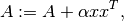
where
is a real symmetric matrix. The arguments A and
x must have type 'd'. alpha must be a real number.
- cvxopt.blas.her(x, A[, uplo = 'L', alpha = 1.0])¶
Hermitian rank-1 update:
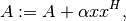
where
is a real symmetric or complex Hermitian matrix. The
arguments A and x must have the same type ('d' or
'z'). alpha must be a real number.
- cvxopt.blas.syr2(x, y, A[, uplo = 'L', alpha = 1.0])¶
Symmetric rank-2 update:
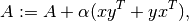
where
is a real symmetric matrix. The arguments A, x,
and y must have type 'd'. alpha must be real.
- cvxopt.blas.her2(x, y, A[, uplo = 'L', alpha = 1.0])¶
Symmetric rank-2 update:
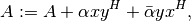
where
is a a real symmetric or complex Hermitian matrix.
The arguments A, x, and y must have the same type
('d' or 'z'). Complex values of alpha are only
allowed if A is complex.
As an example, the following code multiplies the tridiagonal matrix
![A = \left[\begin{array}{rrrr}
1 & 6 & 0 & 0 \\
2 & -4 & 3 & 0 \\
0 & -3 & -1 & 1
\end{array}\right]](_images/math/b000af80200fdf7effeeb2515d90d10fddd5e710.png)
with the vector 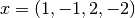.
>>> from cvxopt import matrix
>>> from cvxopt.blas import gbmv
>>> A = matrix([[0., 1., 2.], [6., -4., -3.], [3., -1., 0.], [1., 0., 0.]])
>>> x = matrix([1., -1., 2., -2.])
>>> y = matrix(0., (3,1))
>>> gbmv(A, 3, 1, x, y)
>>> print(y)
[-5.00e+00]
[ 1.20e+01]
[-1.00e+00]
The following example illustrates the use of tbsv.
>>> from cvxopt import matrix
>>> from cvxopt.blas import tbsv
>>> A = matrix([-6., 5., -1., 2.], (1,4))
>>> x = matrix(1.0, (4,1))
>>> tbsv(A, x) # x := diag(A)^{-1}*x
>>> print(x)
[-1.67e-01]
[ 2.00e-01]
[-1.00e+00]
[ 5.00e-01]
Level 3 BLAS¶
The level 3 BLAS include functions for matrix-matrix multiplication.
- cvxopt.blas.gemm(A, B, C[, transA = 'N', transB = 'N', alpha = 1.0, beta = 0.0])¶
Matrix-matrix product of two general matrices:
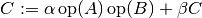
where

The arguments A, B, and C must have the same type ('d' or 'z'). Complex values of alpha and beta are only allowed if A is complex.
- cvxopt.blas.symm(A, B, C[, side = 'L', uplo = 'L', alpha =1.0, beta = 0.0])¶
Product of a real or complex symmetric matrix
and a general
matrix 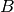:
The arguments A, B, and C must have the same type ('d' or 'z'). Complex values of alpha and beta are only allowed if A is complex.
- cvxopt.blas.hemm(A, B, C[, side = 'L', uplo = 'L', alpha = 1.0, beta = 0.0])¶
Product of a real symmetric or complex Hermitian matrix
and a
general matrix :The arguments A, B, and C must have the same type ('d' or 'z'). Complex values of alpha and beta are only allowed if A is complex.
- cvxopt.blas.trmm(A, B[, side = 'L', uplo = 'L', transA = 'N', diag = 'N', alpha = 1.0])¶
Product of a triangular matrix
and a general matrix :
where

The arguments A and B must have the same type ('d' or 'z'). Complex values of alpha are only allowed if A is complex.
- cvxopt.blas.trsm(A, B[, side = 'L', uplo = 'L', transA = 'N', diag = 'N', alpha = 1.0])¶
Solution of a nonsingular triangular system of equations:

where
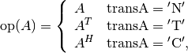
is triangular and is a general matrix. The
arguments A and B must have the same type ('d' or
'z'). Complex values of alpha are only allowed if A
is complex.
- cvxopt.blas.syrk(A, C[, uplo = 'L', trans = 'N', alpha = 1.0, beta = 0.0])¶
Rank-
update of a real or complex symmetric matrix  :
:
where
is a general matrix. The arguments A and C
must have the same type ('d' or 'z'). Complex values
of alpha and beta are only allowed if A is complex.
- cvxopt.blas.herk(A, C[, uplo = 'L', trans = 'N', alpha = 1.0, beta = 0.0])¶
Rank-
update of a real symmetric or complex Hermitian matrix
:
where
is a general matrix. The arguments A and C
must have the same type ('d' or 'z'). alpha and
beta must be real.
- cvxopt.blas.syr2k(A, B, C[, uplo = 'L', trans = 'N', alpha = 1.0, beta = 0.0])¶
Rank-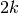 update of a real or complex symmetric matrix
: and are general real or complex matrices. The
arguments A, B, and C must have the same type. Complex
values of alpha and beta are only allowed if A is complex.
and are general real or complex matrices. The
arguments A, B, and C must have the same type. Complex
values of alpha and beta are only allowed if A is complex.
- cvxopt.blas.her2k(A, B, C[, uplo = 'L', trans = 'N', alpha = 1.0, beta = 0.0])¶
Rank- update of a real symmetric or complex Hermitian matrix
: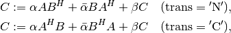
where
and are general matrices. The arguments
A, B, and C must have the same type ('d' or
'z'). Complex values of alpha are only allowed if A
is complex. beta must be real.